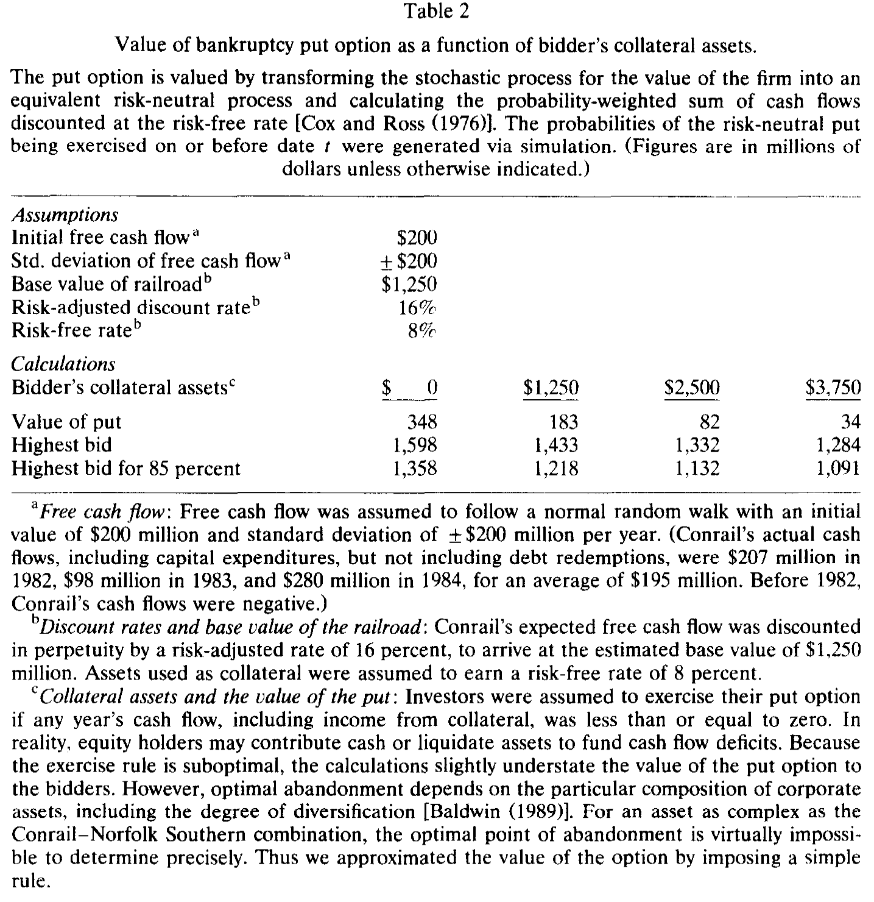
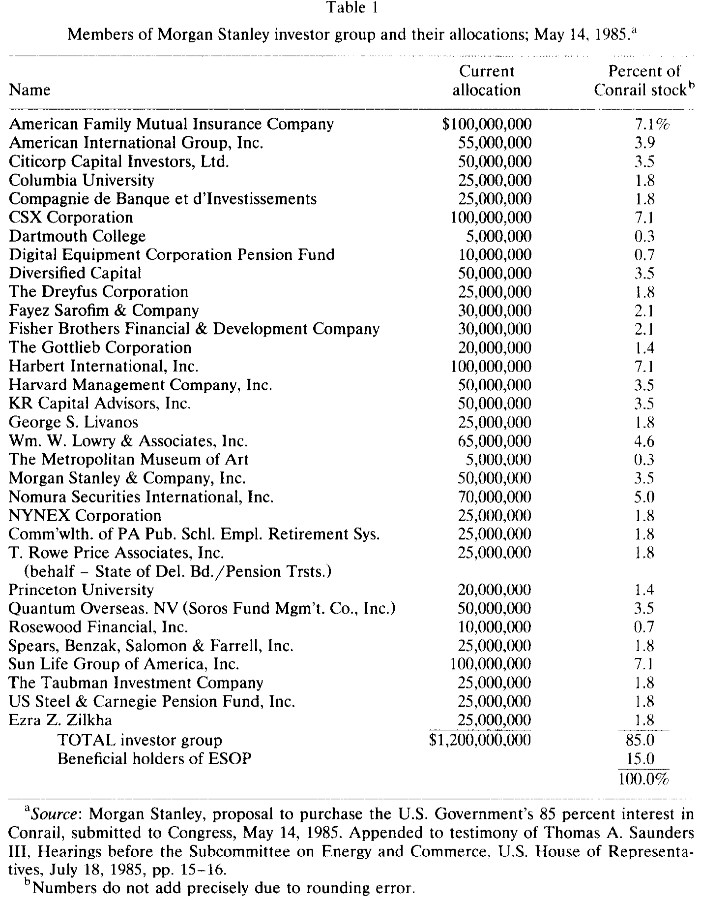
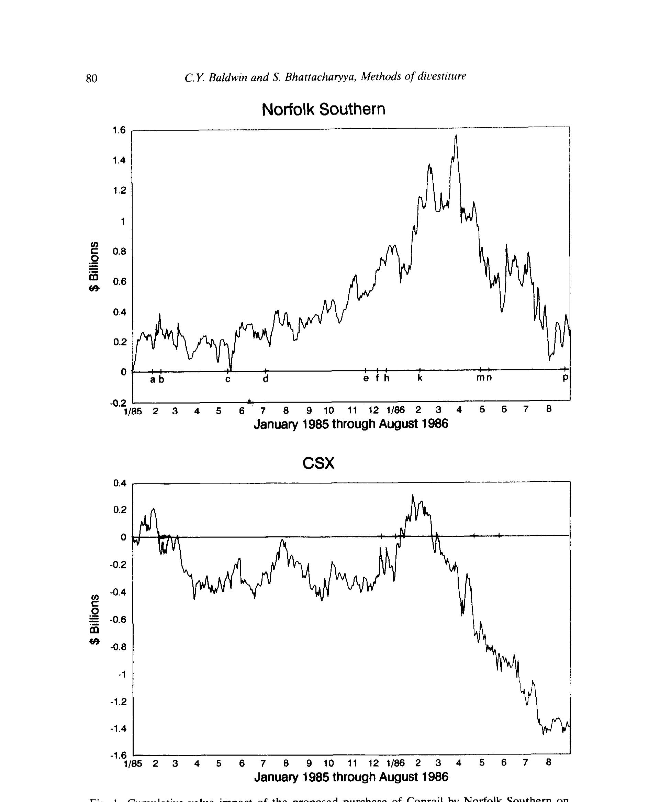
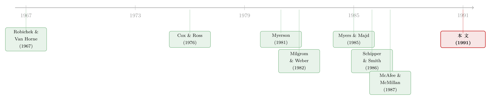

卖掉一家铁路公司：当「最高价」反而不是最好的方法
本文读的是 Baldwin & Bhattacharyya (1991, JFE)：美国政府卖 Conrail（联合铁路公司），先办了一场拍卖，由 Norfolk Southern 以 $1.2 billion 中标——可三年后改用一场公开发股，最终比当年的最高报价多收了 约 $700 million。一桩看似「政治拖延」的烂账，作者把它拆成三个任何一次公司出售都可能遇到的经济学难题：或有索取权、估值分歧、信息不对称。
1 一桩「卖贵了」的失败买卖
先抛出一个反直觉的事实。
拍卖理论几乎是经济学里最干净利落的一块：在相当宽的条件下，公开竞价 (competitive bidding) 能为卖方榨出最高的收入。这条结论从 McAfee 和 McMillan (1987)、Milgrom (1989) 一路写下来，几乎成了教科书的常识。既然如此，一个想把资产卖出高价的卖家，理应去办一场拍卖。
可现实里，我们看到的出售方式五花八门：密封投标、连续拍卖、私下协商、公开发股、直接分股……理论却几乎没告诉我们，为什么这么多方法会同时存在、又该在什么场合选哪一种。更尴尬的是，真正做这个决定的人——公司的董事和经理——几乎从不公开复盘自己的选择。于是从实务的角度看，我们对「为什么选这个方法而不是那个」其实近乎一无所知。
Conrail 的出售，恰恰是一份摊在阳光下的公开档案。
故事的骨架是这样的。1981 年的《东北铁路服务法》(Northeast Rail Service Act, NERSA) 要求把这家由政府一手攒起来的铁路重新卖回私人手里。Conrail 当时刚刚扭亏：1981 年第一次盈利 $39 million，1982 年 $174 million，1983 年 $313 million，外加裁掉 42% 的劳动力。1984 年，运输部 (Department of Transportation, DOT) 办了一场拍卖，14 家公司投标，最后由 Norfolk Southern 以 $1.2 billion 胜出。
按理说，故事到这儿该结束了。但一群私人投资者——由摩根士丹利 (Morgan Stanley) 牵头、32 家机构凑出 $1.2 billion——站出来说：同样的现金价，我们也出。两份针锋相对的报价，把「该用什么方法卖」这个问题，硬生生踢给了国会。
接着，一个自然的问题是：既然有人愿意出同样的钱，这场拍卖凭什么算「赢」了？1986 年 8 月，Norfolk Southern 先把报价抬到 $1.9 billion，随后干脆撤回。1987 年 3 月，政府改弦更张，用一场当时史上最大的公开发股，把 85% 的股权卖了 $1.65 billion；加上发行前派发的 $300 million 特别股利、上市两天后股价又涨了 10%，政府这笔股权最终值约 $2.1 billion，扣掉承销费后净落袋 $1.88 billion。
于是反转出现了：拍卖里那个「最高报价」，比后来一场公开发股少收了大约 $700 million。 不仅卖得便宜，整桩交易还拖了三年，把国会、运输部、工会、客户、竞争对手、第三方投资者，连同一大群投行、律师、公关全都卷了进来，所有当事人都对耗费的时间和金钱怨声载道。
这就是作者要解释的谜：DOT 自以为选了一个兼顾「保住铁路服务」与「卖个好价」的方法，为什么这个方法不仅没卖出高价，还经不起一次挑战？
这是一篇临床研究 (clinical study)：不靠大样本回归，而是把单一交易像解剖标本一样逐层切开。它的价值不在「平均效应」，而在于揭示大样本里看不见的机制。
2 三道暗门：把失败拆成经济学
作者的核心论断只有一句话：DOT 的失败，不是政治的失败，而是经济的失败——它的出售方法没能同时压住三个问题，而这三个问题在任何一次公司剥离里都可能同时出现。
这三道暗门是：
- 或有索取权 (contingent claims)——卖出资产的同时，卖方往往附赠了一份「未来还得兜底」的隐性期权；
- 估值分歧 (differences in valuation)——不同买家对同一资产的估价天差地别，于是没人真正「竞争」；
- 信息不对称 (differences in information)——被卖公司的管理层，比卖方和外部买家都更懂这家公司。
围绕这三道门，全文其实在反复讲透同一件事：一场拍卖要逼出高价，前提是「有一群估值相近、信息对称、且彼此较劲」的买家。Conrail 这三条全不满足。DOT 处理了第一道门（或有索取权），却几乎没碰后两道。
下面我们一道一道走。但真正关键的一步，藏在第一道门里——那份「附赠的期权」。
3 第一道门：政府卖掉的，其实是「资产 + 一份看跌期权」
为什么政府对一场「不设限的拍卖」如此警惕？
因为铁路不能因为某条线亏钱就单方面停运。按规定，一条线路只有在「不再满足最低财务标准」、并经州际商业委员会 (Interstate Commerce Commission, ICC) 认定「公共便利或必要性」允许时，才能被放弃。换句话说，对个别线路放弃的限制，历史上反而逼出了整个系统的破产——七十年代初一连串铁路倒闭就是这么来的，Conrail 本身正是 Penn Central 破产的产物。
政府对「保住运输网」有压倒一切的兴趣，这意味着：一旦私人运营者的财力耗尽，政府很可能被迫再次出手补贴。于是从政府的视角看，卖掉 Conrail，等于卖掉一份资产，外加发行了一份看跌期权 (put option)——其执行价，就是将来一旦失败、政府要承担的经营负债的价值。这正是「弃置期权」(abandonment option) 的思路，从 Robichek 和 Van Horne (1967) 一路延续到 Myers 和 Majd (1985)。
这份「弃置看跌期权」，恰恰是拍卖失灵的根。买家手里的抵押资产越多，这份期权就越不值钱。 一个打算把 Conrail 并入自家庞大网络的买家（比如 Norfolk Southern），等于自带了一大笔抵押品，把违约概率压了下去，也就把政府的或有负债削薄了——可正因如此，这种「政府最想要的买家」反而会出更低的现金价。
这就解释了一个表面上的悖论：DOT 嘴上说「不一定卖给出价最高的人」，还设了 33 条契约，禁止买家通过卖资产、清算、抵押借款和分红「套现走人」；Dole 部长甚至直言「那些契约让我少收了钱……但我要这些契约，而我不知道怎么在公开发股里加进去」。卖方在主动用收入，去交换对那份看跌期权的控制。
3.1 把这份看跌期权算出来
作者用一个风格化的例子，给这份期权称了重。论文沿用 Cox 和 Ross (1976) 的办法：把公司价值的随机过程转换成一个等价的风险中性 (risk-neutral) 过程，再把概率加权的现金流按无风险利率贴现。直觉一句话就是——先把世界「掰」成一个所有资产都只赚无风险利率的虚拟世界，在那个世界里算期望，再用无风险利率贴现回来，这样就绕开了「这份期权该用多高的风险贴现率」这个无解之问。
把这层逻辑写成一个最核心的式子（这是上述风险中性定价的标准形式，论文据此做了模拟）：
其中 r 是无风险利率，T 是期限，K 是执行价（政府将来要承担的负债），V_T 是届时的公司价值。模拟里的具体假设是：初始自由现金流 $200 million、年标准差 ±$200 million（服从正态随机游走）、风险调整贴现率 16%、无风险利率 8%，由此算出 Conrail 的基准价值 $1,250 million；并设定一条简化的执行规则——只要某一年含抵押收益在内的现金流跌到零或以下，就行权。
结果如下页表 2 所示：当 Conrail 作为独立实体出售（买家几乎没有额外抵押品）时，这份看跌期权值 $348 million；而当买家额外带来 $3.75 billion 的抵押资产时，期权价值骤降到只剩 $34 million。换算成「85% 股权的最高报价」，前者是 $1,358 million，后者是 $1,091 million——差不多 $267 million 的鸿沟，全是那份看跌期权造成的。

Table 2
这张表是全文的「文眼」。它把一句抽象的话——「或有索取权会压低拍卖收入」——变成了一个看得见、摸得着、量得出的数字。作者也诚实地承认这是个风格化 (stylized) 的例子：因为采用了次优的执行规则、又没考虑股东可以分块清算资产，这个算法很可能略微低估了期权对买家的价值。
（关于「公司随时可能倒下」这件事如何被装进期权定价的执行边界，可参见《公司随时都可能倒下，期权定价却只盯着还债那一天》；关于把弃置期权拖到现实里逐年对账，可参见《一座金矿什么时候关门？》。）
4 第二道门：估值差太大，竞争就「竞」不起来
走到第二道门，问题变得更微妙。
拍卖逼出高价，靠的是买家彼此咬得紧。但东部铁路经过近二十年的整合，只剩三大系统：Conrail、CSX、Norfolk Southern。对 Norfolk Southern 来说，吃下 Conrail 等于一举消灭一个主要对手，还能把剩下那个（CSX）夹在自己的南北两半之间——它能把货运更多地走自己的线路，在与别家铁路定联运费率时也更有谈判筹码。这是一份独一无二的战略资产，它对 Norfolk Southern 的价值，和对一个把它当独立公司经营的财务买家的价值，根本不在一个量级上。
CSX 的反应最能说明问题。它强烈反对这桩合并——因为一旦两个主要对手联手，自己就要遭殃。它甚至以书面形式表示「愿意匹配任何报价」。DOT 起初把 CSX 这份「不合常规的报价」也列进了上报国会的 14 份名单，后来又不加解释地把它划掉了。CSX 愿意「匹配任何价」这个动作本身，恰恰泄露了：Conrail 对它的价值，远高于对其他竞标者。
可问题在于，估值差得越大，真正的竞争就越稀薄。在这样的格局里，「拍卖」更像是一两个战略买家与卖方的双边博弈，而不是一群势均力敌者的厮杀。再叠加反垄断的不确定性——Norfolk Southern 和 CSX 谁都不确定能不能过反垄断这关——能真正下场较劲的人就更少了。最后只有两家大铁路投标，只有 Norfolk Southern 撑到决赛圈。
于是 DOT 撞上了第二道门：它的三个决赛入围者，对 Conrail 的估价根本不一致。当买家估值高度异质、且人数稀少时，标准拍卖未必能逼出那个估值最高者的「真实保留价」。
这一点与拍卖理论里「买家不对称」的结果一脉相承：当竞标者系统性地不对称时，单纯追求「卖给最高价」的标准拍卖，未必是收入最优的机制。关于卖公司时「故意偏心」反而更优，可参见《卖公司这件事：为什么最优的玩法，是「故意偏心」》。
5 第三道门：管理层手里那张「信息底牌」
第三道门，是这场拍卖最终被推翻的直接推手。
Conrail 的管理层从一开始就强烈反对卖给 Norfolk Southern，并向 DOT 递交了一份替代方案——一场公开发股，并声称这能筹到超过 $1.2 billion，还能保住就业与东北部的铁路竞争。Dole 部长当时驳回了这个方案。但管理层手里攥着卖方和外部买家都没完全消化的信息。
最锋利的一张底牌是税务。按 Norfolk Southern 与 DOT 的协议，Conrail 要交出它在政府所有期间累积的净经营亏损和投资税抵免；但其超过 $3 billion 的高资产税基会结转给 Norfolk Southern，从而源源不断地产生折旧税盾去抵消后者的应税收入——而 Conrail 若保持独立，就无法这么快地用掉这些税盾。摩根士丹利把这个「时间差」的现值估到了 $577 million。这正是「卖给一个有庞大应税利润的大买家」与「让它独立」之间，一笔被外人忽略的巨大价值。
信息不对称的杀伤力，不在拍卖当下，而在事后：拍卖结束后陆续释放的信息，最终为推翻这场拍卖提供了弹药。当一个掌握信息优势的内部人（管理层）联合一个嗅到利润的金融中介（摩根士丹利），就能凑出一份足以匹配中标价、并在国会里把整桩交易搅黄的反方案。1986 年，众议院能源和商业委员会主席 John Dingell 一表态反对，没有他的支持，DOT 就拿不到众议院的批准。
下面这张表，列出了摩根士丹利那 32 家投资者的名单与各自的初始出资——从美国家庭互助保险、AIG、花旗，到哈佛、普林斯顿、哥伦比亚的捐赠基金，乃至 CSX 自己（出资 $100 million）。它直观地展示了：一旦内部人有了信息优势、又有金融中介帮忙组局，「平行的秘密谈判」就能成为一支足以掀翻拍卖的力量。

Table 1
6 没有「最好」的方法，只有「对症」的方法
把三道门并在一起看，文章真正的贡献就浮现了：它不是在批评 DOT 蠢，而是在说明，没有任何单一的出售方法能同时压住这三个问题。
- 公开拍卖逼竞争，却挡不住「或有索取权压低出价」，也无法在买家估值极度异质时奏效；
- 私下协商能塞进那 33 条保护性契约、能挑「自带抵押品」的买家，却放弃了竞争的压力，也给了内部人/中介可乘之机；
- 公开发股能筹到最多的现金（这正是结局），却像 Dole 说的那样，「我不知道怎么在公开发股里加进那些契约」——它压不住那份政府最怕的或有负债。
作者由此提出，像两阶段拍卖 (two-stage auctions) 和平行的秘密谈判 (parallel secret negotiations) 这样的混合方法，能在不同程度上同时对冲这三个问题——但他们也老实承认，找不到一个单一的「最优」方法。这恰恰回答了开篇那个谜：为什么现实里出售方法五花八门？因为每一种方法都在「竞争压力 — 或有负债控制 — 信息租金」这个不可能三角里，各占一角、各有取舍。
下图把 Norfolk Southern 收购方案对相关各方的累积价值影响刻画了出来，正是这种「一处得、一处失」的可视化。

Figure 1: Cumulative value impact of the proposed purchase of Conrail by Norfolk Southern on
7 文献脉络
把这篇论文放回它所处的坐标系，能更清楚地看到它「站在哪」。
一条线是拍卖与机制设计。从 Myerson (1981) 的最优拍卖设计、Riley 和 Samuelson (1981) 的最优拍卖，到 Milgrom 和 Weber (1982) 关于拍卖与竞价的一般理论，再到 McAfee 和 McMillan (1987)、Milgrom (1989) 的综述——这条线建立起「竞争性拍卖通常为卖方榨出最高收入」的基准。但作者正是要指出：这个基准的成立有前提，而 Conrail 三条前提全破。
另一条线是或有索取权与弃置期权。从 Robichek 和 Van Horne (1967) 对资本预算中弃置价值的开创性分析，到 Cox 和 Ross (1976) 的风险中性定价工具，再到 Myers 和 Majd (1985) 用期权定价计算弃置价值——这条线给了作者一把尺子，把「政府附赠的那份看跌期权」量了出来。
第三条线是公司剥离与资产出售的实证。Schipper 和 Smith (1986) 对股权分拆 (equity carve-out) 与增发的比较，是当时大样本研究的代表。作者明确把自己定位为互补：用一桩临床案例，去揭示大样本平均效应里看不见的机制。

8 评论与延伸（Q&A + 研究方向）
(a) 几个可能的疑问
Q：这只是一个个案，凭什么能得出一般性结论？
临床研究的目标本就不是估计平均效应，而是「看清机制」。作者反复强调，这三个问题——或有索取权、估值分歧、信息不对称——能在任何一次公司剥离里出现。Conrail 的价值在于它公开、极端、可逐层解剖，把三道门同时摆上了台面。它提供的是可被后续大样本检验的假说，而非终局证据。
Q：那场拍卖真的「失败」了吗？毕竟后来的公开发股多收了 $700 million，会不会只是市场环境变了？
这正是个案研究最该警惕的地方。1984 年到 1987 年，铁路盈利、税法、股市环境都在变，把全部
$700 million的差额都归因于「方法选错」并不严谨。更稳妥的读法是：拍卖之所以经不起挑战，是因为那个中标价没有高到足以「吓退」后来的竞争者——而这与三道门直接相关，但具体分摊给「方法」与「时机」各多少，单个案例无法干净识别。
Q：政府想要那 33 条契约，又想卖高价，这两者真的不可兼得吗？
作者借 Dole 的原话点破了取舍：「那些契约让我少收了钱……但我不知道怎么在公开发股里加进它们。」契约本质上是在限制买家「套现走人」的自由，等于压低了那份看跌期权的价值，也就压低了买家愿付的现金。所以这是一个真实的权衡，而非管理失误。
Q：为什么 Norfolk Southern 这样「政府最想要」的买家，反而出价更低？
因为它自带抵押品。把 Conrail 并入庞大网络，降低了未来违约的概率，也就削薄了政府的或有负债——表 2 里期权价值从
$348 million降到$34 million正是这个意思。买家在出价里「扣掉」了它替政府省下的那份保险价值，于是现金报价反而更低。这是个深刻的反直觉点：卖方越偏好的买家，现金出价可能越低。
Q：摩根士丹利组的那个投资者团，是「白衣骑士」还是套利者？
论文写得很直白：除 CSX 之外，这些投资者加入是冲着交易里的利润去的。真正的「钥匙」是那笔
$577 million的税务时间差现值——保持 Conrail 独立，对某些投资者而言有利可图。所以它更像是一次由信息优势驱动的套利组局，而「保就业、保竞争」更多是说服国会的政治话术。
Q：这对今天的公司剥离有什么用？
它给出售方一份清单：先问自己这桩交易里哪几道门最要紧。或有负债重（如带环保/养老/退役义务的资产），就要靠契约和买家筛选；买家估值高度异质，标准拍卖未必最优；内部人信息优势大，就要防着「平行谈判」掀桌。方法的选择，应当对症，而非迷信「拍卖必胜」。
(b) 几个可能的研究问题与提案
1. 或有负债的「期权折扣」能否在大样本里被识别？
【经济故事】本文用一个个案说明「自带抵押品的买家出价更低」。如果这是普遍机制，那么在带有显著或有负债的资产剥离（如附带退役义务的能源/公用事业资产）中，买家的财务实力（抵押品规模）应与现金报价负相关。 【可行性】中。需要并购/剥离交易数据库（SDC）匹配买家资产负债表（Compustat）与标的或有负债估计。识别难点在于「自带抵押品」与「协同效应」高度纠缠，需用环保/养老负债的外生冲击（如法规变更）做工具。doable，但干净识别有挑战。
2. 公司债与信用市场里的「弃置看跌期权」定价。
【经济故事】政府对 Conrail 的或有负债，本质是一份写在「系统重要性」上的隐性担保。把视角搬到公司债：被认为「大到不能停运」的企业（铁路、电网、关键基础设施），其债券利差里是否也嵌着一份隐性的政府看跌期权？ 【可行性】中高。可用公司债利差（TRACE）+ 评级 + 行业「系统重要性」代理变量，对比有/无隐性担保预期的发行人。识别可借助监管认定或救助先例的事件冲击。数据可得，机制清晰。
3. 外资买家与「或有负债折扣」。
【经济故事】跨境收购中，外资买家对标的所在国的或有负债（监管、政治、就业承诺）承受力不同，可能系统性地影响其现金报价与中标概率。本文的「买家异质性压低竞争」机制，在跨境场景下应更尖锐。 【可行性】中。需跨境并购数据 + 买家国别 + 标的或有负债强度。难点是政治/监管阻力的度量与内生选择（哪些外资敢来投标本身就是结果）。可优先看受外资审查（如 CFIUS 类机制）的行业。
4. 「平行秘密谈判」作为一种出售机制的实证刻画。
【经济故事】本文指出混合方法（两阶段拍卖、平行谈判）能对冲三道门。但我们对「拍卖中途冒出平行报价」这一现象的频率、触发条件与后果，几乎没有系统证据。什么样的交易最容易被「半路杀出的程咬金」掀翻？ 【可行性】中低。需手工整理交易过程时间线（招股书、代理材料、新闻），样本构建成本高，且「平行报价」常不公开。doable 但偏临床/中等样本，难做成大样本因果。
参考文献
Cox, John C. and Stephen A. Ross (1976). The valuation of options for alternative stochastic processes. Journal of Financial Economics 3, 145–166.
Hite, Gailen L., James E. Owers, and Ronald C. Rogers (1987). The market for interfirm asset sales: Partial sell-offs and total liquidations. Journal of Financial Economics 18, 229–252.
Maskin, Eric and John G. Riley (1984). Optimal auctions with risk averse buyers. Econometrica 52, 1473–1518.
McAfee, R. Preston and John McMillan (1987). Auctions and bidding. Journal of Economic Literature 25, 699–783.
Milgrom, Paul R. (1989). Auctions and bidding: A primer. Journal of Economic Perspectives 3, 3–22.
Milgrom, Paul R. and Robert J. Weber (1982). A theory of auctions and competitive bidding. Econometrica 50, 1089–1122.
Myers, Stewart C. and Saman Majd (1985). Calculating abandonment value using option pricing theory. Working paper, MIT Sloan School of Management.
Myerson, Roger B. (1981). Optimal auction design. Mathematics of Operations Research 6, 58–73.
Riley, John G. and William Samuelson (1981). Optimal auctions. American Economic Review 71, 381–392.
Robichek, Alexander A. and James C. Van Horne (1967). Abandonment value in capital budgeting. Journal of Finance 22, 577–590.
Schipper, Katherine and Abbie Smith (1986). A comparison of equity carve-outs and seasoned equity offerings: Share price effects and voluntary restructuring. Journal of Financial Economics 15, 153–186.
Baldwin, Carliss Y. and Sugato Bhattacharyya (1991). Choosing the method of sale: A clinical study of Conrail. Journal of Financial Economics 30, 69–98.